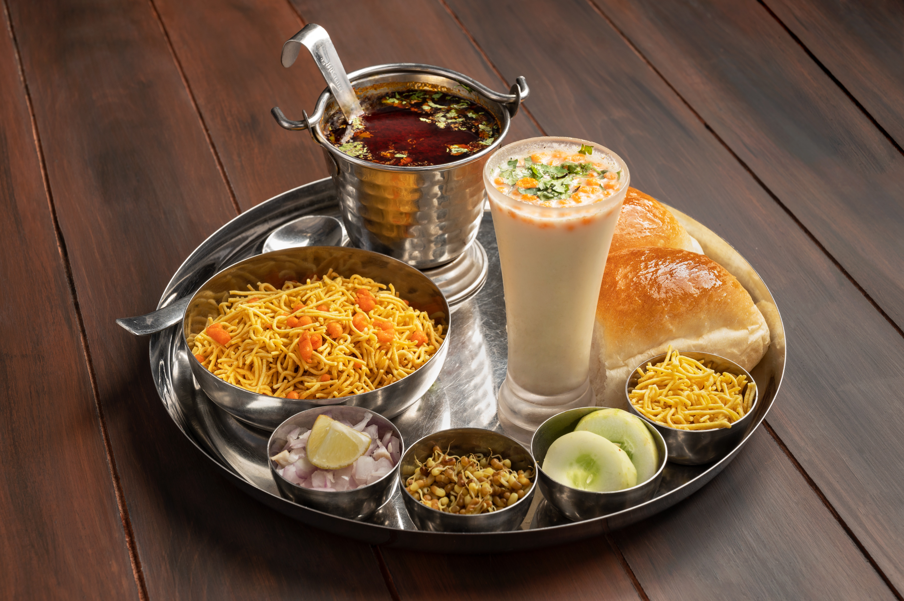

Misal Pav

Ingredients:
- 1 cup sprouted moth beans
- 2 cups mixed sprouts (matki, moth, and black-eyed peas)
- 1 onion, finely chopped
- 2 tomatoes, chopped
- 2-3 green chilies, chopped
- 1/4 cup chopped cilantro (coriander leaves)
- 1/4 cup farsan (sev)
- 2-3 slices of bread, toasted
Instructions:
- Heat oil in a pan and add mustard seeds, cumin seeds, and curry leaves.
- Add chopped onions and sauté until they turn translucent.
- Add ginger-garlic paste, green chilies, and tomatoes. Cook until the tomatoes soften.
- Add sprouts, misal masala, and salt. Cook until the sprouts are tender.
- Serve hot with toasted bread, chopped onions, cilantro, and farsan.
Pav Bhaji
Ingredients:
- 4 potatoes, boiled and mashed
- 2 cups mixed vegetables (peas, carrots, bell peppers), boiled and mashed
- 1 onion, finely chopped
- 2 tomatoes, chopped
- 2 cloves of garlic, minced
- 1-inch piece of ginger, minced
- 2-3 green chilies, chopped
Instructions:
- Heat oil in a pan and add chopped onions. Sauté until they turn golden brown.
- Add minced garlic, ginger, and green chilies. Sauté for a minute.
- Add chopped tomatoes and cook until they turn mushy.
- Add mashed potatoes, mashed vegetables, pav bhaji masala, and salt. Mix well.
- Simmer for 10-15 minutes, adding water as needed. Mash everything together.
- Serve hot with buttered pav (buns) and chopped onions.